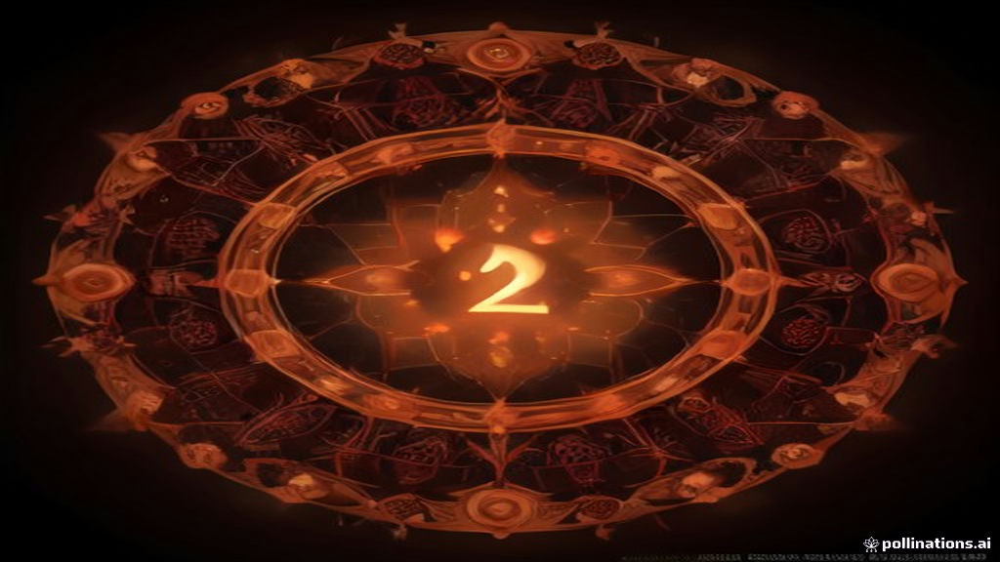

Apakah Anda pernah melihat jam menampilkan 22:22 lagi dan lagi? Bukan sekadar kebetulan, banyak yang menganggap angka tersebut menjadi sinyal khusus dalam hidup. Jangan salah, angka kembar 22:22 bukan hanya slug di jam digital. Ini adalah pesan alam yang, jika Anda tahu cara membacanya, bisa jadi teman setia yang mengarahkan Anda ke arah yang lebih terang.
Dalam dunia numerologi, setiap angka punya energi dan makna tersendiri. Kalau 1 merepresentasikan pemimpin, 2 tersirat kepadanan, serta 7 sering jadi penjambat spiritual, maka 22 dipikirkan sebagai “master builder.” Jadi, kalau angka 22 muncul berulang‑ulang, seolah bumi pun ngingetin bahwa Anda sedang dalam fase pembangunan—tidak hanya fisik, tapi juga jiwa.
Namikah, teknologi, dan amunisi sosial tak pernah terlewatkan oleh para numerolog. Angka 22:22 di jendela jam, sepertinya bukan angka biasa. 22 adalah “master number.” Dalam kehidupan sehari‑harinya, angka‑angka ini sering kali melahirkan ‘wow moment’: kesuksesan besar, pembentukan komunitas, atau pencapaian spiritual tingkat tinggi. Di balik penampilan “kembar,” selalu ada potensi yang kuat untuk tumbuh membuat impian menjadi kenyataan.
Bayangkan Anda sedang berbincang di coffee shop sambil menunggu layanan. Jam di meja menunjukkan 22:22. Sebaliknya, seklak data terpilih, Anda pun terbuka berbisik: “apakah ini berkaitan dengan tekanan pekerjaan?” Benar, numerologi memberi Anda kerangka kerja untuk meyakini bahwa situasi yang membuat stres bisa dijadikan sarana belajar. Nomor 22 menjadi jantung beating yang mengajak Anda tetap bergerak.
Seringkali 22:22 disamakan dengan 11:11 yang tampak lebih “magical.” 11 dipercaya sebagai “angel number.” Tetapi 22 datang lebih berat: dua belas pangkat lama. Jadi jika 11:11 memberitahu arah, 22:22 menuntun lewat ‘pembinaan’ konkret. Bukalanya, 22:22 lebih suka Anda pakai alat tangani tangan: hitam atau biru, tapi pisahkan dari semangat empiris.
Karier: Ini saat pembukaan peluang luput. Mungkin rasa “tenang” baru terjadi karena 22:22 bukan sekadar angka, melainkan jadi master builder buat memulai langkah baru. Kesehatan: Alhamdulillah, dalam numerologi kondisi fisik memiliki satu arti: “tidak selaras.” 22:22 bisa jadi call untuk lebih ekspresif: olahraga, dimakan produk organik, atau keseimbangan waktu tidur. Hubungan: Angka ini sering dibogoh oleh “relationships” sebab 22 mengandung sifat distribusi. Kalau 22:22 muncul, itu peluang untuk memberi lebih, menerima lebih… same as 'give-and-take' para.
Angka ini bukan “must.” Angka 22:22 mendorong Anda menjadi “builder” — bukan sekadar fetcher but also creator. Ia menginspirasi Anda untuk menabung semangat, memebuat rencana, merencanakan strategi jangka panjang. Karena, tanpa ‘tanggung pengeluaran’, 22 tetap tidak bakal memberi hadiah.
Numbers dan situasi tak boleh ditangani secara kasar. Misalnya, 22:22 saling memantul pada jam pengingat sistem komputasi, bisa saja itu hanya “kebajikan” atau kalibrasi server. Jadi, saat menemukan 22:22, bersikap cerdas: tanya, cek, dan kalau ada koordinasi yang memerlukan lebih jelas, ubah itu berikut.
Secara sederhana, angka kembar 22:22 dalam numerologi menandakan tahap master builder yang menenangkan dahsyat bidang hati. Keterbatasan yang diluntai pada “pekerja keras" waktunya dibalan. Simaklah pentingnya memperhatikan gaya hidup dan pendekatan jangka panjang. Dan bila perlu, bisa pakai jam analog & digital untuk memantau berapa kali 22:22 muncul. Jangan khawatir, situasi tidak terlalu terkritis.
Selamat mengejar “master builder” energy dan menjaga agar membuka peluang ketika jam meniti 22:22 lagi. Siapa tahu, mungkin ini akan menjadi titik balik kebahagiaan. Tranfacing, mutu, dan semangat terus!